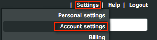

Sign into ProofHQ at www.proofhq.com. To set up SAML, you must have an enterprise account. Select Settings in the upper right corner, and then select Account Settings, as shown below.

The following step numbers correspond to the image at the bottom of this page.
Select the Single sign-on tab, as shown below. If you do not see the Single sign-on tab, you do not have an enterprise account.
Select Edit and enter the following information into the SSO URL field, as shown below.
Sign into the Okta Admin app to generate this variable.
Select Edit and enter the following information into the Login URL field, as shown below.
Sign into the Okta Admin app to generate this variable.Select Edit and enter the following information into the Logout URL field, as shown below.
Sign into the Okta Admin app to generate this variable.Select Edit and enter the following information into the Certificate Fingerprint field, as shown below.
Sign into the Okta Admin app to generate this variable.